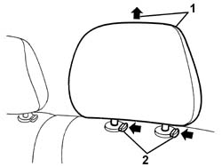

7050B10 l/h or r/h head restraint (one) of rear seat - r+r
- Path
- Procedures > 70 FITTINGS > 7050 REAR SEATS > 7050B rear seat head restraint/arm rest > 7050B10 l/h or r/h head restraint (one) of rear seat - r+r
- Kind
- repair procedure (removal / refitting; the operation number is the code)
- Applies to
- all engines; all production periods
- Interactive page
- https://sloeber94.github.io/elrnDB-a147/en/#/3025888
Applies to: all engines; all production periods
 Removing
Removing
 Refitting
Refitting1. Raise the head restraint to the limit of its travel.
2. Press the retainers and withdraw the head restraint.

Applies to: all engines; all production periods
Refitting
RemovingCheck that the head restraint is undamaged.
Refit the head restraint fully home in its seating.
Press the retainers and insert the head restraint.